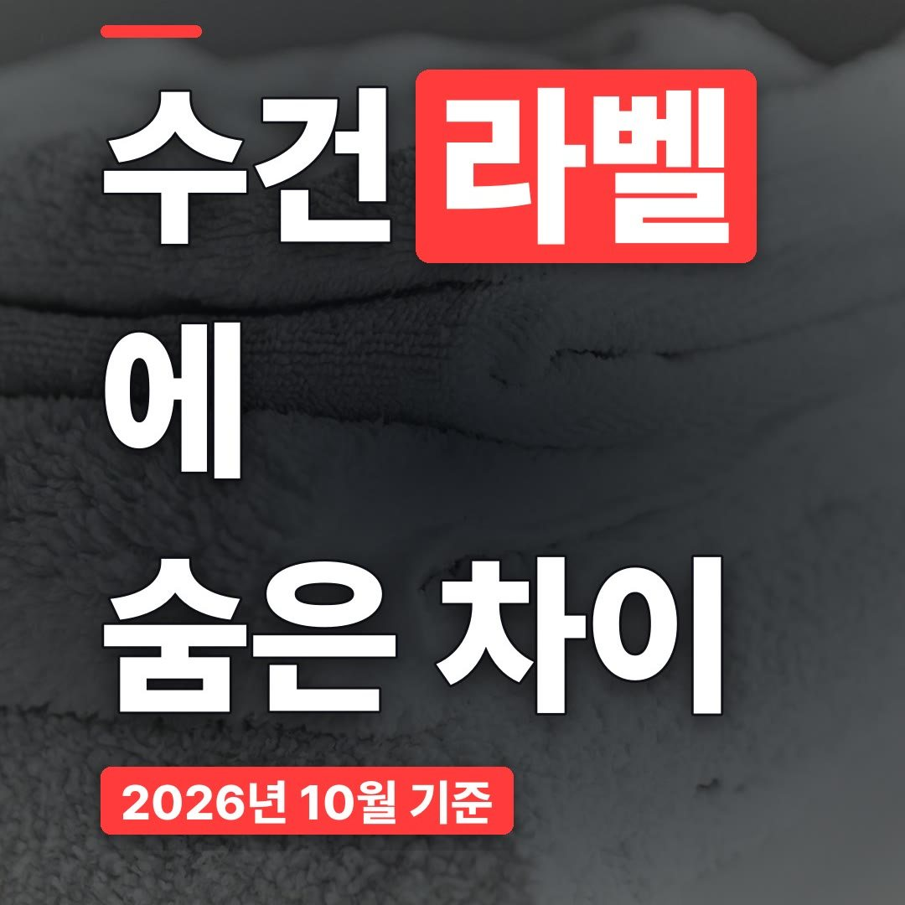
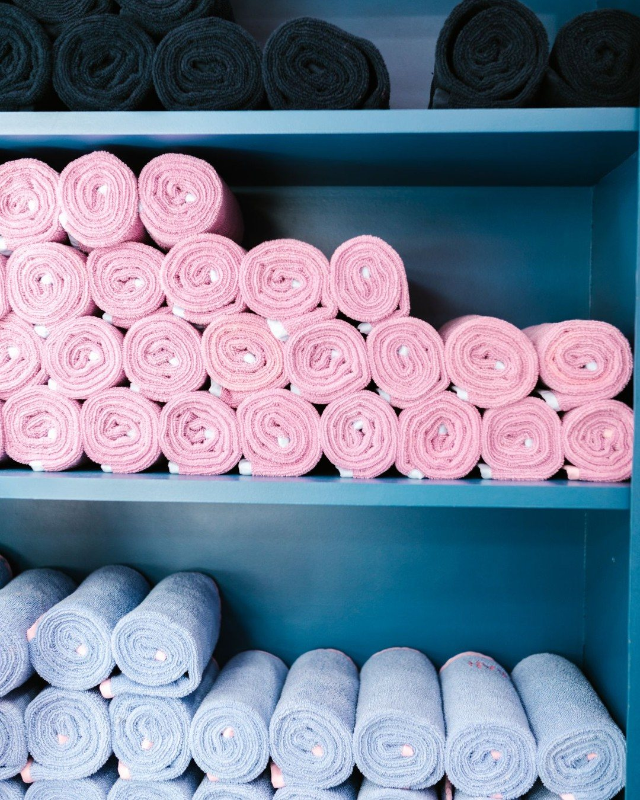
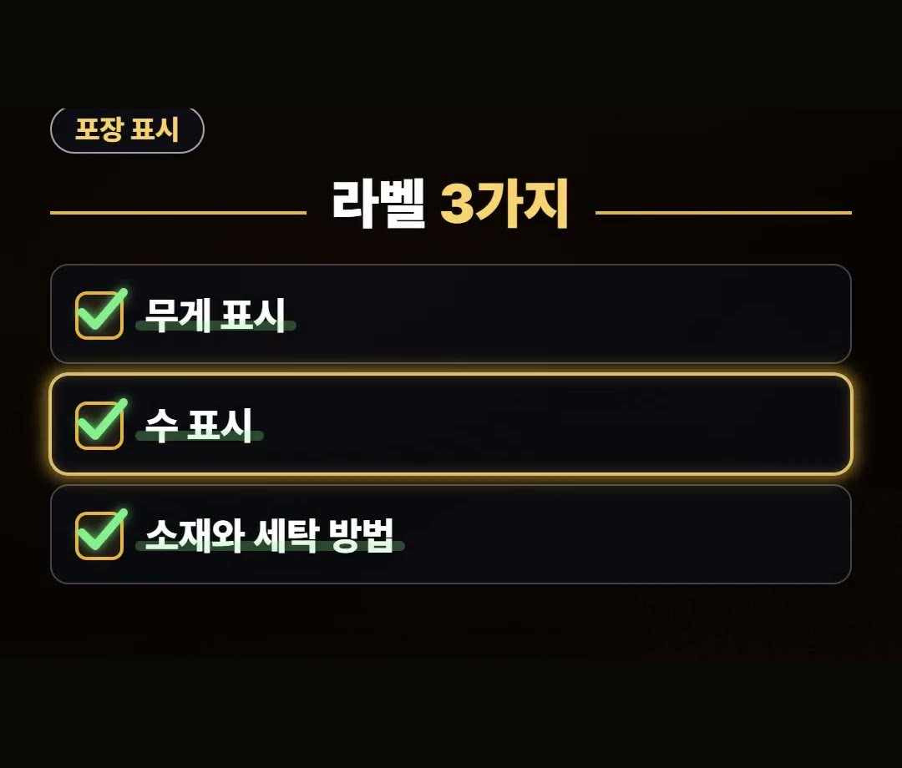
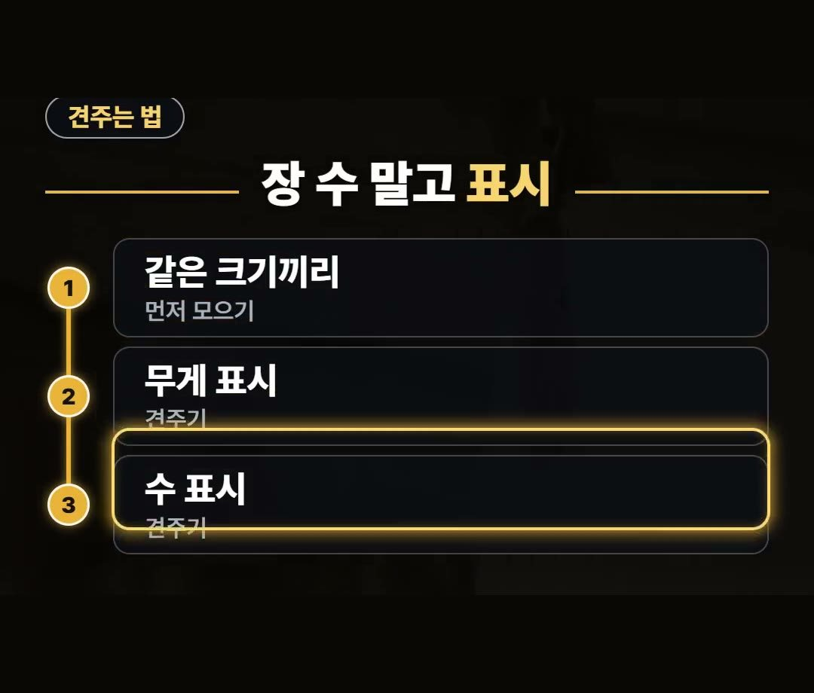
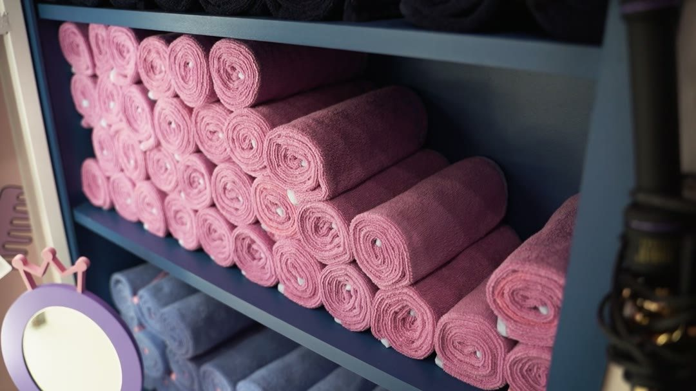
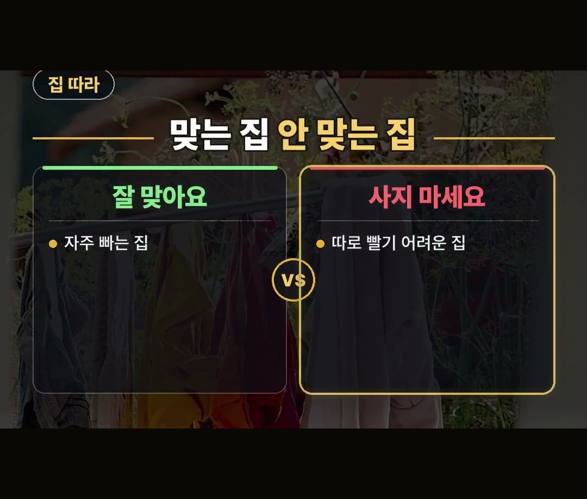

수건 추천, 장 수보다 라벨을 먼저 봐야 하는 이유
※ 이 글에는 제휴 링크가 포함되어 있으며, 링크를 통해 구매하시면 일정 수수료를 받을 수 있습니다. (가격은 같습니다)
※ 이 포스팅은 쿠팡 파트너스 활동의 일환으로, 이에 따른 일정액의 수수료를 제공받습니다.
※ 이 콘텐츠는 토스쇼핑 쉐어링크 활동의 일환으로, 링크를 통한 구매가 발생하면 일정 수수료를 지급받습니다.
수건을 살 때 몇 장 묶음인지, 무슨 색인지부터 보고 담으시나요?
결론부터 말씀드리면, 수건은 장 수보다 포장 라벨을 먼저 보세요.
같은 크기라도 무게와 실 굵기는 제품마다 다르기 때문이에요.
왜 라벨인지, 라벨에서 무엇을 보면 되는지, 어떤 집에는 맞지 않는지는 아래에서 차근차근 풀어 볼게요.
수건 포장에서는 무게 표시, 수 표시, 소재와 세탁 방법 이 3가지를 기억하세요!
몇 그램, 몇 수가 좋다는 공식 숫자는 없으니 같은 크기끼리 견줘 보는 게 핵심이에요. 🧺

수건 추천, 장 수와 색깔만 보면 놓치는 것
수건은 장 수랑 색깔만 보고 담기 쉽죠.
그런데 같은 크기라도 무게와 실 굵기는 제품마다 달라요.
겉으로 보면 비슷해 보여도 포장 안의 수건은 서로 다를 수 있다는 뜻이에요.
그래서 장 수를 세기 전에 라벨부터 확인하는 게 순서입니다.

포장 라벨에서 볼 3가지
그 차이는 포장 표시에 적혀 있어요.
수건 라벨에서 볼 것은 이 3가지입니다.
- 무게 표시
- 수 표시 (실 굵기를 뜻해요)
- 소재와 세탁 방법
무게 표시는 수건의 무게를, 수 표시는 실이 얼마나 굵은지를 알려 줘요.
소재와 세탁 방법 표시는 집에서 어떻게 빨면 되는지와 이어집니다.
같은 크기라도 무게와 실 굵기는 제품마다 다르니, 이 표시가 수건끼리의 차이를 보여 주는 셈이에요.
세 가지 모두 포장에 적혀 있으니 장바구니에 담기 전에 한 번씩 읽어 보세요.
온라인으로 살 때도 상품 정보에서 같은 표시를 찾아보면 됩니다.

가정용 수건 추천, 같은 크기끼리 견주세요
몇 그램, 몇 수가 좋다는 공식 숫자는 없어요.
그러니 숫자 하나만 보고 좋다, 나쁘다를 정하기는 어렵습니다.
대신 이렇게 견줘 보세요.
- 같은 크기끼리 먼저 모으기
- 무게 표시 견주기
- 수 표시 견주기
장 수랑 색깔 말고, 같은 크기끼리 무게 표시와 수 표시를 나란히 놓고 보는 거예요.
크기가 다른 수건끼리 숫자를 견주면 차이를 알기 어렵습니다.


첫 세탁 표시와, 이런 집이면 사지 마세요
새 수건을 사면 첫 세탁은 제품 표시대로 하세요.
소재와 세탁 방법 표시를 보고 우리 집 빨래 습관에 맞는지 확인하면 돼요.
- 소재와 세탁 방법 먼저 보기
- 첫 세탁은 제품 표시대로
수건은 한 번 사면 자주 빠는 물건이라, 세탁 방법이 우리 집 세탁 습관과 맞는지가 중요해요.
다른 빨래와 같이 빨지, 따로 빨아야 하는지도 표시를 보고 미리 따져 보세요.
수건을 자주 빠는 집이라면 같은 묶음이 잘 맞아요.
한 번에 같은 수건을 여러 장 갖춰 두면 번갈아 쓰기 편합니다.
반대로 세탁 방법 표시대로 따로 빨기 어려운 집이라면 사지 않는 게 낫습니다.
표시대로 빨 수 없다면 라벨을 꼼꼼히 본 의미가 줄어들기 때문이에요.
- 잘 맞아요: 수건을 자주 빠는 집
- 사지 마세요: 따로 빨기 어려운 집

호텔수건 추천 글 보기 전에, 이런 제품도
이런 제품도 있어요.
상품 설명에 따르면 200그램 호텔 수건이고, 아이스블루 색 10장 묶음이라고 합니다.
호텔수건이라는 이름만 보고 고르기보다, 위에서 정리한 무게 표시와 수 표시, 소재와 세탁 방법을 같은 크기 제품과 견줘 보세요.
정리
- 수건은 장 수와 색깔보다 포장 라벨(무게 표시·수 표시·소재와 세탁 방법)을 먼저 보세요.
- 몇 그램·몇 수가 좋다는 공식 숫자는 없으니 같은 크기끼리 견주고, 첫 세탁은 제품 표시대로 하세요.
- 세탁 방법 표시대로 따로 빨기 어려운 집이라면 사지 않는 게 낫습니다.
여러분은 수건 살 때 장 수와 라벨 가운데 무엇을 먼저 보세요?
링크는 아래에 모아 두었어요.
📌 2026년 10월 기준 정보예요. 가격은 시기에 따라 달라질 수 있어요.
영상 화면: Pexels (Hanna Pad, KATRIN BOLOVTSOVA, Kateryna Aleksandrova, RDNE Stock project, ROMAN ODINTSOV, Rachel Claire)
사진: Pexels (RDNE Stock project)